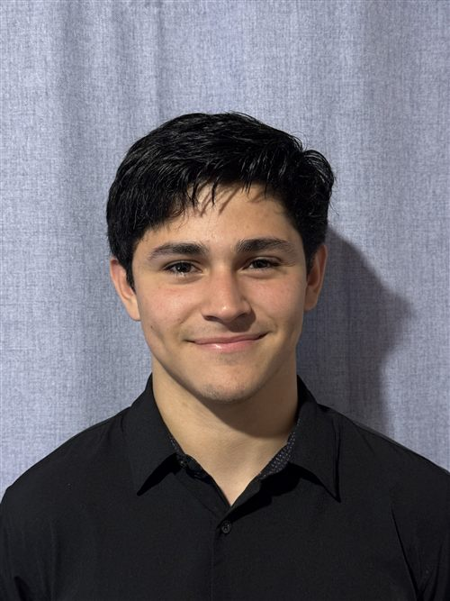

Soy Alan Vega, profesional de IT con experiencia en un entorno de producción real: soporte a usuarios, infraestructura y redes, y desarrollo de herramientas web internas con JavaScript/Node.js y SQL. Estudiante de Análisis de Sistemas.
Desarrollo y mantengo herramientas web que digitalizan procesos que antes se hacían a mano: carga de datos, seguimiento de tareas operativas y documentación de activos e incidentes de IT.
Estado: son herramientas internas de mi trabajo actual, así que el detalle público (arquitectura, capturas, decisiones técnicas) está sujeto a permiso de publicación. Acá va a aparecer una versión sanitizada en cuanto pueda publicarla.
Trabajo diario en producción: instalación y mantenimiento de estaciones de trabajo, switches, cableado, access points, dispositivos IP y cámaras de seguridad. Resolución de incidentes priorizando continuidad del servicio, en entornos Windows.
Tipo de problemas que resuelvo: procesos operativos que se hacen a mano y deberían ser una herramienta web; incidentes de IT donde hay que diagnosticar rápido con usuarios reales esperando; e infraestructura que funciona pero nadie documentó.
Cómo abordo un sistema nuevo: primero miro cómo trabaja la gente que lo usa antes de proponer nada; priorizo cambios chicos y verificables sobre soluciones grandes; y documento lo que hago para que cualquiera pueda retomarlo. Vengo de atención al cliente en turismo internacional: sé explicar lo técnico a gente no técnica.
Hacia dónde voy: estoy profundizando en desarrollo backend e integración de APIs de IA (LLMs) en herramientas reales — lo marco como en formación, no como experiencia.
Trabajo en IT Support e infraestructura en una empresa de turismo, dando soporte a áreas administrativas y operativas: usuarios, hardware, redes y sistemas internos. En paralelo desarrollo herramientas web internas que reemplazan procesos manuales.
Antes de IT trabajé dos años y medio en atención al cliente en turismo internacional, coordinando equipos bajo procedimientos de seguridad. Eso me dio algo que no se aprende en un tutorial: trabajar bajo presión con usuarios reales y comunicar con claridad.
Estudio la Tecnicatura Superior en Análisis de Sistemas (en curso) y busco un rol full-time donde pueda combinar infraestructura y desarrollo — remoto o con reubicación. También tomo proyectos freelance puntuales.
Si necesitás a alguien que resuelva tanto el soporte y la infraestructura como la herramienta web que los ordena, escribime. Respondo rápido y sin vueltas. Disponible remoto o con reubicación.